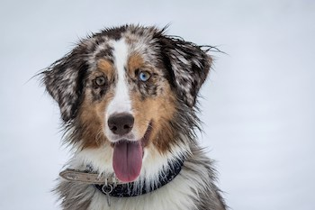

I would rather prefer picking dogs over cats because dogs are very protective and kind. I say this because dogs could be there for you if you are at your lowest and when you are at your hardest times. They could also protect your house if you are not home which keeps your house look the exact same when you come back. Dogs could also learn many tricks that you want them to learn and they could also learn very fast. Overall I believe that dogs are better than cats because they are very dominate and you could have a friend so you do not have to feel lonley.
